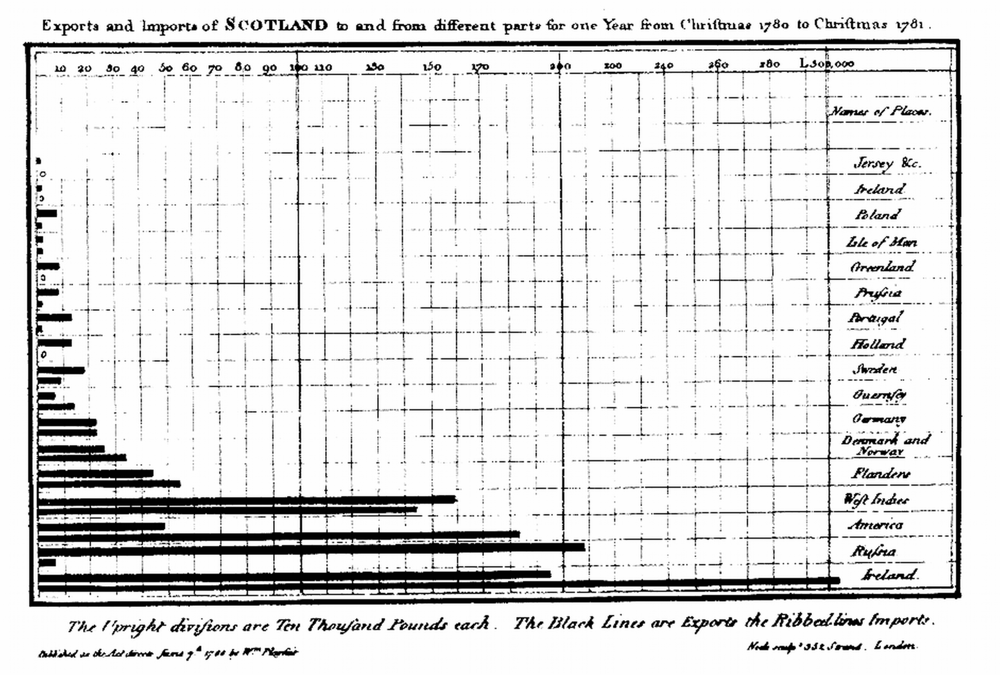

<!doctype html>
<html lang="en">
<head>
<meta charset="utf-8">
<!-- CUSTOMIZE THIS! -->
<title>Einführung in die Digital Humanities</title>
<meta name="author" content="Christof Schöch">
<!-- END -->
<meta name="description" content="Slides">
<meta name="apple-mobile-web-app-capable" content="yes">
<meta name="apple-mobile-web-app-status-bar-style" content="black-translucent">
<meta name="viewport" content="width=device-width, initial-scale=1.0, maximum-scale=1.0, user-scalable=no, minimal-ui">
<link rel="stylesheet" href="css/reveal.css">
<link rel="stylesheet" href="css/theme/simple.css" id="theme">
<!-- Code syntax highlighting -->
<link rel="stylesheet" href="lib/css/zenburn.css">
<!-- Printing and PDF exports -->
<script>
var link = document.createElement( 'link' );
link.rel = 'stylesheet';
link.type = 'text/css';
link.href = window.location.search.match( /print-pdf/gi ) ? 'css/print/pdf.css' : 'css/print/paper.css';
document.getElementsByTagName( 'head' )[0].appendChild( link );
</script>
<!--[if lt IE 9]>
<script src="lib/js/html5shiv.js"></script>
<![endif]-->
</head>


<body>
<div class="reveal">
<div class="slides">
  <section data-markdown="" 
           data-separator="^\n--\n" 
           data-separator-vertical="^\n---\n" 
           data-charset="utf-8" 
           data-background-image="img/basics/uni-trier-mini.png" 
           data-background-size="50px" 
           data-background-position="top right">
<script type="text/template">

# Informationsvisualisierung
<br/>
<br/>
<br/>
<br/>
<br/>Vorlesung *Einführung in die Digital Humanities*
<br/>MSc Digital Humanities | Wintersemester 2020/21
<br/>
<br/>Prof. Dr. Christof Schöch
<br/>
<hr/>
<br/>


--
### Sitzungsüberblick
1. Informationsvisualisierung als Forschungsgebiet
2. Begrifflichkeiten
3. Ein-/Zweidimensionale Daten
4. Verteilungen
5. Verlaufsdaten
6. Hierarchische Daten 
7. Räumliche Information: Karten
8. Relationale Informationen: Netzwerke
9. Visualisierungstools


--
## (1) Informationsvisualisierung als Forschungsgebiet

---
### Beteiligte Bereiche
<br/>
* Kognitive Psychologie: Wie nehmen Menschen wahr? Wie kann man die Effizienz von Visualisierungen testen? <!-- .element: class="fragment" data-fragment-index="1" -->
* Informatik: Mit welchen Algorithmen kann ich bestimmte Formen von Daten layouten? <!-- .element: class="fragment" data-fragment-index="2" -->
* Statistik: Welche Kennzahlen, Muster und Trends kann man aus den Daten extrahieren? <!-- .element: class="fragment" data-fragment-index="3" -->
* Grafik-Design: Welches Form der Visualisierung passt am besten zu den Daten? <!-- .element: class="fragment" data-fragment-index="4" -->
* Journalismus: Welche Anwendungsperspektiven haben Visualisierungen? (siehe auch: Datenjournalismus) <!-- .element: class="fragment" data-fragment-index="5" -->


--
## (2) Begrifflichkeiten

---
### Überblick
* Visualisierung
* Informationsvisualisierung
* Datenvisualisierung
* Infographik

---
### Visualisierung
<br/>
>Visualization is my umbrella term. A visualization is any kind of visual representation of information designed to enable communication, analysis, discovery, exploration, etc.<br/>(Cairo 2016, 28)


---
### Charts
<br/>
>A chart is a display in which data are encoded with symbols that have different shapes, colors, or proportions. In many cases, these symbols are placed within a Cartesian coordinate system.<br/>(Cairo 2016, 28)

<br/>Verwandte Begriffe: Grafik, Plot, Diagramm.
<br/><br/>Beispiel: <a href="img/E09/gapminder-bubbleplot.png">Life expectancy, GDP per capita and population size</a> (Gapminder)

---
### Infographics
<br/>
>An infographic is a multi-section visual representation of information intended to communicate one or more specific messages. Infographics are made of a mix of charts, maps, illustrations, and text (or sound) that provides explanations and context.<br/>(Alberto Cairo 2016, 31)

<br/>Beispiel: <a href="img/E09/scmp-hunters_infographic.png">The hunter and the hunted</a> (SCMP)

---
### Data visualisations
<br/>
>A data visualization is a display of data designed to enable analysis, exploration, and discovery. Data visualisations aren't intended mainly to convey messages that are predefined by their designers. Instead, they are often conceived as tools that let people extract their own conclusions from the data.<br/>(Alberto Cairo 2016, 31)

<br/>Beispiel: United Nations Human Development Data,<br/>http://hdr.undp.org/en/data

---
### News application
<br/>
>A news application is a special kind of visualization that lets people relate the data being presented to their own lives. Its main goal is to be useful by being customizable according to each person's needs. <br/>(Alberto Cairo 2016, 31)

<br/>Beispiel: Deutschland-Wahlkarte 2017,<br/>https://deutschlandwahlkarte2017.morgenpost.de/#de


--
## (3) Weitere Grundlagen

---
### Formen von Visualisierungen
* Ein-/Zweidimensionale Daten: Punkte, Säulen, Boxen <!-- .element: class="fragment" data-fragment-index="1" -->
* Hierarchische Daten: Bäume, Treemaps  <!-- .element: class="fragment" data-fragment-index="2" -->
* Relationale Daten: Netzwerke <!-- .element: class="fragment" data-fragment-index="3" -->
* Temporale Daten: Timelines und Verläufe <!-- .element: class="fragment" data-fragment-index="4" -->
* Räumliche Daten: Karten <!-- .element: class="fragment" data-fragment-index="5" -->
* Raumzeitliche Daten: Karten mit Zeitkomponente <!-- .element: class="fragment" data-fragment-index="6" -->
* Komplexe Daten: dreidimensional, interaktiv, virtuell <!-- .element: class="fragment" data-fragment-index="7" -->

---
### Das "visuelle Vokabular"
* Raum: 2D oder 3D
* Punkte, Linien, Flächen
* Farbe, Intensität, Form, Größe
* Richtung (vertikal, horizontal)

---
### Herausforderungen der Visualisierung
* Für welche Daten passt welche Visualisierungsform?  <!-- .element: class="fragment" data-fragment-index="1" -->
* Wie stelle ich sicher, dass meine Visualisierung verstanden wird? <!-- .element: class="fragment" data-fragment-index="2" -->
* Wie kann ich Unsicherheit visualisieren? <!-- .element: class="fragment" data-fragment-index="3" -->
* Die "five qualities" von Alberto Cairo: truthful, functional, beautiful, insightful, enlightening  <!-- .element: class="fragment" data-fragment-index="4" -->

--
## (4) Ein-/Zweidimensionale Daten

---
## Chart-Typen
<br/>
* Barcharts
* Scatterplots

---
### Pionier: Playfair (Barchart)

<br/><small>(Quelle: <a href="https://commons.wikimedia.org/wiki/File:Playfair_Barchart.gif">Wikimedia Commons</a>, public domain.)</small>

---
### Replikenverteilung (Barchart)

<br/><small>(Quelle: DLINA-Gruppe)</small>

---
### Distinktive Wörter (Barchart)
<a href="img/E09/zetascores.svg"></a>
<br/><small>(Quelle: Schöch 2018)</small>

---
### Pionier: Russell (Scatterplot)

<br/><small>Absolute magnitude against spectral class<br/>(Quelle: Spence and Garrison 1993)</small>

---
### Tragödien und Komödien (Scatterplot)
<a href="img/E09/worksbyzeta.svg"></a>
<br/><small>(Quelle: Schöch 2018, CC-BY)</small>

---
### Semantische Dimensionen (Scatterplot)
<a href="img/E09/word-embeddings_scatterplot.svg"></a>
<br/><small>(Quelle: Schöch 2019, CC-BY)</small>

---
### 3D-Scatterplot
<br/>
* https://www.rpubs.com/RobertHesselbach/450624


--
## (5) Verteilungen

---
### Chart-Typen
<br/>
* Histogramm
* Boxplot
* Violinplot


---
### Boxplot und Verteilung

<br/><small>(Quelle: Wikipedia, https://en.wikipedia.org/wiki/File:Boxplot_vs_PDF.svg, CC BY-SA 2.5)</small>

---
### "wish" by gender (Boxplot)

<br/><small>(Quelle: Schöch)</small>

---
### "wish" by gender (Histogramm)

<br/><small>(Quelle: Schöch)</small>

---
### "wish" by gender (Dichtefunktion)

<br/><small>(Quelle: Schöch)</small>


---
### Violin Plot (Boxplot + Dichte)

<br/><small>(Quelle: http://diagrammm.com/img/diagrams/violin-plot-terminology.svg)</small>


--
## (6) Verlaufsdaten

---
## Chart-Typen
<br/>
* Linechart
* Timeline

---
### Pionier: Mendenhall (Linechart)

<br/><small>(Quelle: Mendenhall 1898 )</small>

---
### Klassiker: IPPC-Klimareport (Linechart)

<br/><small>(Quelle: https://www.decodedscience.org/wp-content/uploads/2011/11/ipcc-climate-change-chart.jpg, 2001)</small>

---
### Topic-Entwicklung (Linechart)

<br/><small>(Quelle: Schöch, CC-BY)</small>

---
### Bibliographische Daten (Timeline)

<br/><small>(Quelle: Schöch, CC-BY)</small>


--
## (7) Hierarchische Daten

---
## Chart-Typen
<br/>
* Dendrogramm
* Treemap


---
### Pionier: Augustin Augier, 1801 (Dendrogramm)

<br/><small>(Quelle: https://commons.wikimedia.org/wiki/File:Augier_tree_of_life.jpg, public domain)</small>


---
### Thematische Ähnlichkeit (Dendrogramm)

<br/><small>(Quelle: Schöch, CC-BY)</small>

---
### A phylogenetic tree of life (Dendrogramm)
<a href="img/E09/generated-tree-of-life.svg"></a>
<br/><small>(Quelle: https://commons.wikimedia.org/wiki/File:Tree_of_life_SVG.svg, public domain)</small>

---
### Marktanteile (Treemap)

<br/><small>(Quelle: Schöch, CC-BY)</small>

---
### Inflation's Parts (Kreisförmige Treemap)

<br/><small>(Quelle: http://www.datavis.ca/gallery/images/cox/inflation-full.jpg, <br/>siehe auch: https://archive.nytimes.com/www.nytimes.com/interactive/2008/05/03/business/20080403_SPENDING_GRAPHIC.html)</small>


--
## (8) Räumliche Information: Karten

---
## Chart-Typen
<br/>
* Topographische Karten
* Verzerrte / abstrahierte Karten

---
### Klassiker: Pestfälle in London (Karte) 

<br/><small>(Quelle: http://www.datavis.ca/gallery/images/snowmap_1854-large.jpg)</small>

---
### Klassiker: Minard, Russlandfeldzug (Verlaufskarte)

<br/><small>(Quelle: https://en.wikipedia.org/wiki/File:Minard.png)</small>

---
### 2020 Presidential Election (anamorphote Karte)

<br/><small>(Quelle: New York Times, <br/>https://www.nytimes.com/2020/11/19/learning/whats-going-on-in-this-graph-2020-presidential-election-maps.html)</small>

---
### Hong Kong MTR (Abstrakte Karte)

<br/><small>(Quelle: http://www.mtr.com.hk/en/customer/services/system_map.html)</small>

---
### Top-5000 Filme (Geobrowser)
<a href="https://geobrowser.de.dariah.eu/?kml1=https://geobrowser.de.dariah.eu/data/imdb/imdb_best5000.kml&currentStatus=mapChanged=Maps-for-Free+relief+map"></a>
<br/><small>(Quelle: https://geobrowser.de.dariah.eu)</small>

--
## (9) Relationale Informationen: Netzwerke

---
### Netzwerk: Pionier

<br/><small>(Siegfried Bernfeld, Vom Gemeinschaftsleben der Jungend, 1922, <br/>Quelle: Jürgen Pfeffer, http://www.pfeffer.at/data/visposter/)</small>


---
### Figuren (Netzwerk)

<br/><small>(Betweenness Centrality in Les Confessions,<br/>Quelle: Yannik Rochat)</small>

---
### Entwicklung (Netzwerk)

<br/><small>(Verlauf in den Büchern von Les Confessions,<br/>Quelle: Yannik Rochat)</small>

---
### Disziplinen (Netzwerk)

<br/><small>(Quelle: http://www.martingrandjean.ch/complex-network-visualisation-interdisciplinarity/)</small>

---
### "Sinn" Wikipedia vs. Roman (Netzwerk)

<br/><small>(Quelle: Schöch 2019)</small>


--
## (10) Visualisierungstools

---
### Tools im Überblick
* Mit graphischer Benutzeroberfläche <!-- .element: class="fragment" data-fragment-index="1" -->
    * LibreOffice Calc / MS Excel ($)
    * Gephi (Netzwerkanalys)
    * Tableau, Matlab, Plotly uvm.
* Python-Bibliotheken <!-- .element: class="fragment" data-fragment-index="2" -->
    * Matplotlib / pyplot, https://matplotlib.org/
    * Seaborn, https://seaborn.pydata.org/
    * Bokeh, https://bokeh.pydata.org/en/latest/
    * pygal, http://pygal.org/en/stable/


--
# 5. Schluss


---
### Bonusplot: Musikstile

<br/><small>(Violin Plot mit Zeitachse und Clustering, <br/>Quelle: Mauch et al. 2015)</small>


---
### Lektürehinweise

<small>

**Referenzlektüre**
* Malte Rehbein, "Informationsvisualisierung", in: _Digital Humanities: Eine Einführung_, hg. von Fotis Jannidis, Hubertus Kohle und Malte Rehbein. Stuttgart: Metzler, 2017, S. 328-342.

**Weitere Empfehlungen**
* Alberto Cairo. _The Truthful Art. Data, Chars, and Maps for Communication_. Pearson, 2016.
* Isabelle Meirelles. _Design for Information: An Introduction to the Histories, Theories, and Best Practices Behind Effective Information Visualizations_. Rockport, 2013. 
* Peter Fischer-Stabel. _Datenvisualisierung. Vom Diagramm zur Virtual Reality. UTB, 2018. (Der Autor ist Professor in Trier.)
* Michael Friendly, _Datavis.ca_, http://www.datavis.ca/ (York University, Toronto, Kanada.)

</small>


---
<br/>
<br/>
<br/>
<br/>
<br/>Christof Schöch, 2020
<br/>http://www.christof-schoech.de
<br/>
<hr/>
Lizenz: [Creative Commons Attribution 4.0](https://creativecommons.org/licenses/by/4.0/)
<br/>


</script>

<!-- DON'T TOUCH UNLESS YOU KNOW WHAT YOU'RE DOING :-) -->
</div>
<script src="lib/js/head.min.js"></script>
<script src="js/reveal.js"></script>
<script>
// Full list of configuration options available at:
// https://github.com/hakimel/reveal.js#configuration
Reveal.initialize({
    controls: true,
    progress: true,
    history: true,
    center: false,
    transition: 'slide', // none/fade/slide/convex/concave/zoom
    // Optional reveal.js plugins
    dependencies: [
        { src: 'lib/js/classList.js', condition: function() { return !document.body.classList; } },
        { src: 'plugin/markdown/marked.js', condition: function() { return !!document.querySelector( '[data-markdown]' ); } },
        { src: 'plugin/markdown/markdown.js', condition: function() { return !!document.querySelector( '[data-markdown]' ); } },
        { src: 'plugin/highlight/highlight.js', async: true, callback: function() { hljs.initHighlightingOnLoad(); } },
        { src: 'plugin/zoom-js/zoom.js', async: true },
        { src: 'plugin/notes/notes.js', async: true }
        ]
    });
Reveal.configure({ slideNumber: true });
</script>
</body>
</html>
